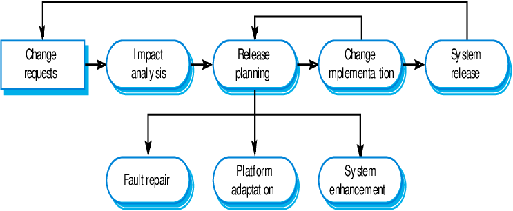
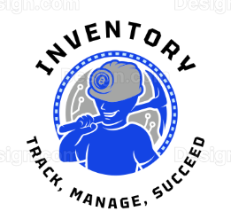
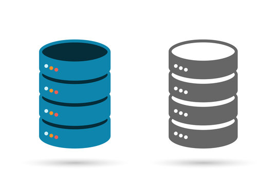
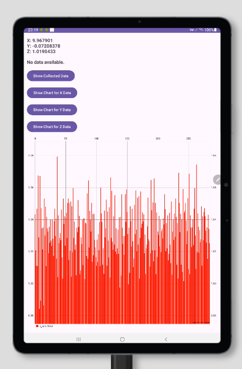

artifacts and enhancements
Within this portfolio, you will discover a selection of carefully curated artifacts derived from both my coursework at Southern New Hampshire University (SNHU) and additional projects rigorously developed under the guidance of my instructors. These projects have been meticulously chosen and enhanced, showcasing not only the breadth of my technical abilities but also the depth of my understanding in applying complex concepts to real-world problems.
Each artifact included has undergone significant enhancements as part of a comprehensive plan aimed at demonstrating advanced problem-solving skills and innovative approaches in the fields of software engineering, algorithm optimization, and database management. These enhancements are thoroughly documented and detailed through narratives that elucidate the changes and improvements made, ensuring that each modification aligns with industry standards and best practices.
To further illuminate my developmental process and technical strategies, I have prepared a code review video. This video offers an insightful walkthrough of the enhancements applied, discussing the rationale behind each decision and the technical challenges encountered along the way. It serves as a reflective piece that not only highlights my coding and design skills but also my ability to critically analyze and enhance existing solutions.
Software Design and Engineering
Android Inventory Management App Artifact
Below are the links to download the zip files of the Inventory Management App both before and after the enhancements were applied. These files provide a comprehensive view of the changes and improvements made during the project.
Artifact Origin
The artifact selected for this category is the Android Inventory Management App, originally developed as a project for the CS 360: Mobile Architecture and Programming course at Southern New Hampshire University (SNHU). This application was designed to enable effective management of inventory by allowing users to track and manage inventory items using a mobile platform, leveraging the robust capabilities of Java and Android Studio.
Purpose and Utility

The primary purpose of this app is to simplify inventory management tasks, making it accessible and user-friendly for personnel in various organizational roles. It serves as a practical tool to enhance operational efficiency by facilitating real-time updates and easy access to inventory data.
Detailed Overview of Enhancements to the Android Inventory Management App
Initial Plans and Objectives
The enhancement project for the Android Inventory Management App was designed with the goal of refining its functionality and user experience across several key areas. Our detailed plans were:
- User Role Management: To implement a feature that categorizes users by their role within the company and restricts access based on these roles. This update necessitated modifications to the database schema to include new role-related fields and adjustments to the user interface to accommodate role-specific interactions.
- Security Enhancements: To introduce a dual-layer security mechanism during the account creation phase. This involved implementing a password confirmation step to eliminate input errors and a confirmation code requirement, where users must verify their identity via a code sent to their registered email or phone, enhancing the app's overall security posture.
- User Interface Improvements: To overhaul the app's visual design to increase aesthetic appeal and user engagement. This included standardizing the color scheme, incorporating a new logo for better brand recognition, and optimizing the navigation flow to improve the overall user experience.
Achievements and Execution
Following thorough planning, the enhancements were executed with precision, leading to significant improvements in the app's performance and user satisfaction:
- Implementation of User Role Management: We successfully integrated a comprehensive user role management system. The backend database was expanded to support new data fields related to user roles, and the frontend was adapted to react dynamically based on the user's role, enhancing both functionality and security.
- Robust Security Features: The security of the app was significantly fortified by the new two-step verification process. The password confirmation feature ensures that user passwords are entered correctly, reducing the risk of errors. Additionally, the confirmation code system has been effectively deployed, requiring users to authenticate their accounts via a secure code, thereby mitigating potential unauthorized access.
- Redesign of the User Interface: The user interface redesign was completed successfully, featuring a modern, clean design with a consistent color scheme and a new logo. These enhancements not only improved the visual appeal but also made the app more intuitive and user-friendly, leading to a better user experience.
This enhancement project was an invaluable learning experience, deepening my understanding of advanced software engineering principles and user-centric design. It highlighted the importance of thorough planning and precise execution in software development, particularly in:
- User Interface Design: The redesign taught me about the impact of visual elements on user interaction and the importance of a consistent aesthetic to reinforce brand identity.
- Security Practices: Implementing advanced security features provided practical experience in safeguarding user data and reinforced the need for rigorous testing and validation to ensure system integrity.
- Database Management: The addition of user role management expanded my capabilities in database schema design and highlighted the critical role of data structure in supporting functional enhancements.
Through this project, I have significantly enhanced my skills in integrating complex software solutions, ensuring both robust security measures and a high-quality user experience. The challenges encountered have prepared me for future projects, underscoring the value of resilience and adaptability in technology development.
Category : Databases
Below are the links to download the zip files of the Inventory Management App both before and after the enhancements were applied. These files provide a comprehensive view of the changes and improvements made during the project.
Artifact Origin and Description
Artifact Name: Accelerometer Sensors App from CS 360.
App Description and Potential Usage

The application utilizes the device’s built-in accelerometer to detect changes in motion across the X, Y, and Z axes. By enhancing the app with an SQLite database, it now provides the capability to store, retrieve, and analyze historical accelerometer data. This addition transforms the app into a powerful tool for various applications:
- Fitness Tracking: Users can monitor their physical activities, such as walking, running, or cycling, to analyze their performance over time.
- Health Management: The app can help users track their daily movements, which can be crucial for monitoring conditions like Parkinson's disease or recovery progress in physical therapy.
- Scientific Research: Researchers can use the data collected to study human motion patterns or to develop algorithms for activity recognition.
- Game Development: Developers can integrate this functionality to create more interactive and motion-based gaming experiences.
Enhancement Overview
Previously, the application was limited to sensing and displaying real-time accelerometer data without the capability to store this information. With the latest enhancements, the app now features a robust SQLite database, which not only captures but also efficiently stores accelerometer readings. This pivotal upgrade extends beyond mere real-time monitoring, enabling comprehensive historical data analysis.
The integration of database storage transforms the app into a more versatile tool, significantly expanding its scope and usability. Users can now access and review their movement history, an essential feature for both personal use and professional applications in health and sports industries. This historical data analysis capability is invaluable for tracking and improving physical activities over time, making it ideal for fitness tracking, health management, and scientific research that requires monitoring of movement patterns.
Enhancement Plan
- Database Setup: Create an SQLite database to store data with fields for timestamp, X, Y, and Z values.
- Data Insertion: Modify the sensor event listener to insert data into the database with timestamps.
- Data Retrieval: Implement a method to fetch historical data from the database and display it in the app.
- User Interface Updates: Update the UI to include options for accessing historical data.
- Error Handling and Optimization: Enhance error handling and optimize database operations for efficient data handling.
Pseudocode for Database Operations
// Inserting data
function insertAccelerometerData(xAxis, yAxis, zAxis) {
openDatabaseConnection();
if (databaseConnectionIsOpen()) {
prepareStatement("INSERT INTO data (x, y, z) VALUES (?, ?, ?)");
bindData(xAxis, yAxis, zAxis);
executeStatement();
closeConnection();
}
}
// Retrieving data
function getHistoricalAccelerometerData() {
openDatabaseConnection();
if (databaseConnectionIsOpen()) {
var data = executeQuery("SELECT * FROM data ORDER BY timestamp DESC");
displayData(data);
closeConnection();
}
}
The enhanced application's ability to store and analyze accelerometer data over extended periods is critical for applications requiring detailed activity tracking and trend analysis. This functionality is especially crucial for users aiming to monitor their fitness activities, manage health conditions, or engage in detailed scientific research.
This enhancement demonstrates advanced database management and integration with mobile applications, aligning with multiple course outcomes including database design, data persistence, and optimizing data storage and retrieval.
Enhancing the accelerometer app to include database functionality was a complex but rewarding challenge that improved both the utility and educational value of the project. I gained insights into SQLite, database schema design, and the critical role of efficient data handling in real-time applications.
Algorithms and Data Structures

Artifact Origin and Name
Building on the existing capabilities of the Accelerometer Sensors App introduced in Category Three, this phase of enhancement focuses on advancing the app's functionality through sophisticated data structure manipulation and algorithm development. The application now features dynamic and interactive graphical visualization of accelerometer data using MPAndroidWatch, an enhancement aimed at significantly enhancing user interaction and data usability.
This graphical visualization allows users to interactively view data for the X, Y, and Z axes, with charts updating dynamically to reflect real-time data changes. Such enhancements make the app an invaluable tool for a variety of practical applications, including fitness tracking, health monitoring, and scientific research involving motion analysis.
Practical Plan for Enhancement
- Store Data at One-Minute Intervals: Modify the
onSensorChangedmethod to store data every minute using timestamps to ensure data is captured consistently. - Create Buttons and Input Fields: Enhance the user interface by adding buttons to visualize data for each axis and input fields for users to select specific time intervals for data visualization.
- Implement Bar Chart Visualization: Develop methods to fetch data based on user inputs and display this data in a bar chart format using MPAndroidChart, providing a clear and engaging data visualization experience.
Algorithm and Pseudocode
// Initialization of components
Initialize UI components (TextViews, Buttons, BarChart);
Initialize SensorManager and accelerometer sensor;
Initialize database helper;
// OnCreate - Setup UI and listeners
Set content view;
Find and setup UI components;
Setup click listeners for data visualization buttons;
Display initial accelerometer data;
// OnSensorChanged - Data handling
If event is from accelerometer:
Get current time;
If one minute has passed since last data capture:
Insert data into database;
Update UI with current data values;
// DisplayAccelerometerData - Fetch and display data
Fetch data from database;
If data exists, display in TextViews; otherwise, show "No data available";
// VisualizeData - Data visualization
Fetch specified axis data from database;
Convert data to BarEntries for chart;
Update BarChart with new data;
This enhancement covers several key skills and course outcomes:
- Data Handling and Processing: Demonstrates efficient real-time data collection and storage, highlighting proficiency in managing and manipulating large datasets.
- Graphical Data Visualization: Utilizes MPAndroidChart to implement complex data visualizations, showcasing the ability to integrate and utilize advanced third-party libraries.
- User Interaction and Interface Design: Enhances user interface elements to allow interactive data visualization, emphasizing skills in UI design and user experience optimization.
- Algorithm Development: Develops robust algorithms for data fetching and processing, ensuring efficient and responsive app functionality.
The process of enhancing the accelerometer app involved significant technical challenges, particularly in integrating the MPAndroidChart library and ensuring efficient data handling and visualization. These enhancements not only improved the app's functionality but also provided a practical application of theoretical concepts learned in coursework, such as algorithms and data structures, real-time data processing, and user interface design. This experience has been instrumental in solidifying my understanding and capability in developing comprehensive software solutions.